У нас было 6 основных линеек комиксов


Игры, спин-оффы, космический хомяк Зигги

Когда возрождается древнее темное божество, необходима мобилизация всех сил, и герои стекаются в Сибирь отовсюду, где бы ни были. И пока храбрые воины борются с воплощенным злом, ловко подчиняющим себе героев и их друзей, книгочеи изгоняют сумасшедшего инквизитора из его же книги, а кому-то даже предстоит остановить луч смерти, направленный на аномально активную планету.


Кутх
Главный антагонист кроссовера «Время Ворона». Бог-Ворон, языческий бог хитрости и обмана, поклявшийся уничтожить православие. Выбрал своим аватаром Сергея Разумовского и воплотился в его теле.

Магистр
Могущественный чернокнижник, изначально из линейки «Инок». Тайно сотрудничает с Семиазой. Принял активное участие в возвращении Кутха. Охотится за волшебными камнями.
Свартжель
Дочь Кутха. Помогла Богу-Ворону возродиться. Обладает большой магической силой и злобным характером. Впервые появилась в линейке «Бесобой», затем действовала во «Времени Ворона». Ее останки подобрал и использовал в своих целях Антихрист.
Август ван дер Хольт
Владелец компании «HOLT International», производящей оружие. Больше всего на свете любит власть, деньги и свою младшую сестру Мико. Умеет бить людей током. Изначально герой линейки «Красная фурия». Вышел сухим из воды после гибели Кутха, подставив МакАлистера.

Данила Бесобой
Охотник на демонов и Часовой, искусственно созданный Семиазой на кургане тысячи павших воинов и получивший их силу. Долгое время был убежден, что он бывший военный, потерявший семью во время боевых действий. В его теле был заперт Сатана. Спутник Данилы — бесенок Шмыг.

Джесси Родригез
Безбашенная наемница, получающая искреннее наслаждение от вида крови, перестрелок и жестокости. Нимфоманка. После того как Джесси избила сестру Хольта, чтобы подставить Нику, вынуждена скрываться от прежнего работодателя и примкнуть к старым врагам.

Игорь Гром
Питерский следователь, борец за добро и справедливость. Проблемы предпочитает решать кулаками, хотя в уме ему тоже не откажешь. После кроссовера, повредившись психикой, уволился со службы, но продолжает вершить добро.

Андрей Радов
Тусовщик, заложивший крест деда ради покупки автомобиля. Чтобы вернуть семейную реликвию-артефакт, путешествовал во времени и поучаствовал в многочисленных войнах. Стал Иноком — защитником русской земли, однако в кроссовере утратил свои силы и былой статус. Ныне защищает все Многомирье.
Ника Чайкина
Она же Красная Фурия. Профессиональная воровка с чистым сердцем, волей судьбы ставшая сотрудницей МАК. Новообретенная команда стала для Ники семьёй, которой у девушки никогда не было, и она готова сражаться на их стороне, даже лишившись ног в схватке с Августом ван дер Хольтом.

Мы до сих пор не видели пришельцев: Земля не еще не готова к ним, а потому изолирована. Только вот Алена Кузнецова родилась на этой планете и очень хочет домой, несмотря на запреты, хорошую космическую компанию и проблемы и приключения, сваливающиеся на голову вопреки закону Ньютона, который не должен действовать в космосе.


Метеора
Известная космическая контрабандистка. Родилась и жила на Земле, пока отец не утащил её с собой в космос, а сам пропал с горизонта. Сначала делает, потом думает, но ловко выкручивается из любых проблем. В свободное от работы время собирает вещи с Земли и отчаянно пытается вернуться домой.
Пуш
«Танк» команды Метеоры. Гаальский принц, наследник трона, вынужденный покинуть родную планету после дворцового переворота. Спокойный и рассудительный, готов как поддержать товарищей, так и вправить им мозги. Именно он научил Ору управлять кораблем.
Тео
Капитан корабля «Аномалия», конкурент и эпизодический союзник Метеоры. Родная планета Веил отвергла его, лишив маски и кланового имени за совершенные преступления. Но Метеора дала ему новое, пообещав, что его примет Земля.

Зигги
Техник, изобретатель, интеллектуальный центр команды Метеоры и верный друг. Впрочем, иногда его положительные качества отходят на второй план — когда в нем включается азарт игрока или неуемное любопытство. Может менять внешность, используя чужую ДНК.

Феникс
Охотник за головами, землянин, отец Метеоры. Прожил больше пяти человеческих жизней, не постарев, отлично стреляет, быстро бегает и исчезает без следа. Приложил руку к глобальному политическому расколу космоса и вечной ненависти Заба Неру к дикарям с Земли.

Заб Неру
Военный комиссар Коалиции, следит за порядком в космосе и готов на крайние меры для устранения того, что порядку угрожает. Принадлежит к одной из наиболее развитых рас, мито, и представляет собой разумный антропоморфный гриб в стильной форме и на каблуках. Жесткий, непримиримый враг, который никогда ничего не забывает.

Мири
Бывшая возлюбленная Пуша, нынешняя супруга Дургала, временная фаворитка лиримского короля. Решительная роковая женщина, не забывающая о принципах и готовая рисковать. С такими мужчинами в личной жизни к риску вообще нужно быть готовой всегда.

Дургал
Избалованный лиримский аристократ, давний противник Пуша. Его отец организовал дворцовый переворот, но в итоге Дургалу это не принесло ничего хорошего, лишь распятие и тюрьму за провинности перед новым королем. Говорят, он потерял рассудок от пыток. Что ж, значит, это сердце позволило ему в ключевой момент объединиться с Пушем, чтобы вместе сбежать из тюрьмы.
Шебу Предвечный
Древний бог. Рассказал Метеоре, что именно он когда-то забросил на Землю крупицы жизни. Имеет форму пирамиды и говорит стихами. Загадочный, но явно очень могущественный.
Книги сходят с ума, персонажи вмешиваются в события совершенно обычного мира, разноцветные чернила способны одарить владельца волшебными силами или превратить в тень за стеллажами библиотеки, а для сдачи экзамена необходимо от души навалять однокурсникам. Девочка-гик Лиля Романова открывает для себя новые грани литературы и становится магом Ордена Книгочеев.


Лиля Романова
Киберспортсменка, гик, бровастая красавица. Переживает за финал «Ганнибала» больше, чем за голодных детей в Африке. Новенькая в Настоящей Московской Библиотеке — как и читатель, не понимает ровным счетом ничего. Её цвет — жёлтый, и она маг боевого спектра.
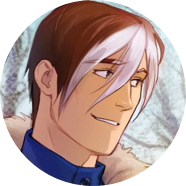
Саша Алиновский
Неубиваемый бунтарь, которого чуть не сбил гроб на колесиках. Живет с долбанутым экстравертом Соловьем на квартире вместо универской общаги, чему не очень рад.

Соловей (Артур)
Долбанутый экстраверт с повадками трехлетнего ребенка, курит чернила и выступает за права шлепок. Персонаж, когда-то давно придуманный Ангелиной Евгеньевной и неясным образом существующий в реальном мире.
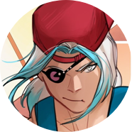
Инга Шелковиц
Маг Ордена книгочеев. Обладает сверхскоростью. Может соединять стихию своего цвета, воздуха, со стихией света для совершения различных чар, например, телепортации. Хобби: лапать Сашу.
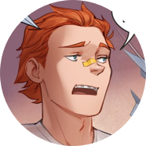
Матвей Корецкий
Тот самый чувак, который выпендривается перед ректором, а прилетает за это всем. Бомж и феечка в одном лице. Способен летать, на носу вечно прилеплен пластырь.
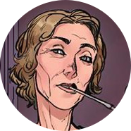
Ангелина Евгеньевна
Глава Московской Библиотеки и маг Ордена книгочеев. Женщина за 60. Пытается бросить курить, за своих студентов и двор стреляет в упор. Экспериментирует с имиджем по настоятельной просьбе Роскомнадзора.

Владимир
Бывший воспитатель Лилии Романовой, каким-то образом связанный с Орденом книгочеев и их давней войной с магами монохрома. Кира считает, что Владимир убил её брата Кая, чтобы отобрать цвет монохрома.

Кира
Маг монохрома, обладательница чёрных чернил, чей брат-дуал по имени Кай был убит. Кира считает, что это Владимир, которого Дядя Коля с помощью своих воспитанников удерживает в плену вместе с Кирой, убил её брата, чтобы отобрать цвет монохрома.
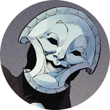
Прасковья
Старшая тень Настоящей Московской Библиотеки, некогда бывшая одной из её талантливейших студенток и сумевшая освоить шесть цветов чернил. Её главная обязанность — это обучение теней новому способу существования путём пропускания через себя.
Москва под угрозой вторжения демонов, и противостоять этому может только Данила-Бесобой. За его силой стоит таинственный Совет Равновесия, а внутри героя был запечатан сам Сатана. Во «Втором дыхании» от него удалось избавиться, но отделаться от разношерстной компании помощников гораздо сложнее — да и зачем, если раскрывающиеся подробности мироустройства подкидывают Бесобою неприятностей больше, чем ведьма, оборотень, ночной кошмар и прочие не вполне нормальные коллеги.


Сатана
Падший ангел, правитель Ада. Был предан ангелом Семиазой во время войны с Небесами, создал Трон для управления Адом. Ныне свергнут; после свержения долгое время был заперт в теле Данилы. Предположительно отец Антихриста. На настоящий момент пребывает в бестелесной форме.

Данила Бесобой
Охотник на демонов и Часовой, искусственно созданный Семиазой на кургане тысячи павших воинов и получивший их силу. Долгое время был убежден, что он бывший военный, потерявший семью во время боевых действий. В его теле был заперт Сатана. Спутник Данилы — бесенок Шмыг.

Антихрист (Часовой)
Часовой, отказавшийся умирать. Был заключен в Паутине Лимба и вырвался наружу благодаря хитрой интриге, не последнюю роль в которой против воли сыграл Данила. Оказавшись на Земле, Антихрист спешно принялся за новые интриги и в конце концов захватил Ад. Обаятелен, хитер, сам себе на уме.
Ярх Смертоносный
Бывший раб, освобожденный Сатаной, ныне — глава легиона Бретёров, третьего по значимости в Аду. Бывший личный телохранитель Сатаны, помог Аваддону и Ракшору свергнуть его с трона. Ближайшая подруга и бывшая напарница по Арене — демоница Танахия.

Яна
Девушка-Курьер, в тело которой демоны способны вселяться по собственному желанию. Сирота, жила на улице, промышляя мелким воровством. Данила спас Яну и привел в дом Черного Пса, где в нее переселился ночной кошмар Балор. Он обучает ее магии и постепенно разрушает ее личность.

Балор
Морок, бывший слуга Сиерго, созданный им из останков короля фоморов. Способен проникать в сны, превращая их в невыносимые кошмары. Балора трудно заметить, еще сложнее уничтожить. На настоящий момент находится в теле Яны, обучает и меняет ее, но от такого соседства меняется и сам.
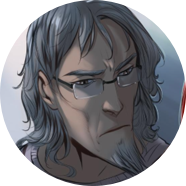
Чёрный Пёс
(Алексей Рыков)
(Алексей Рыков)
Шаман, волей Совета Равновесия помогающий Даниле охотиться на нечисть; он набил Даниле татуировки и приютил Данилу, Яну, Шмыга и Павла у себя дома. Оборотень, знаком со многими нейтральными представителями нечистой силы.
Королева Гнили (Настя)
Ведьма, питающаяся жизненной энергией демонов, придерживается разумного нейтралитета, но по старой романтической дружбе с Черным Псом соглашается помочь Даниле в борьбе против оборотней в арке «Стая».
Павел Очередько
Бывший солдат, лишился ног при взрыве. Глава Магческого Чрезвычайного Комитета Дзержинский вернул ему ноги и предложил стать агентом МЧК. Получил задание помогать команде Бесобоя. Симпатичный и забавный молодой человек, с интересом поглядывает на Яну.
Майор Следственного комитета Игорь Гром успешно раскрывает даже самые запутанные дела, но стоят ли эти победы жизни и счастья тех, кого он любит? Не стоят, — подсказывает «Второе дыхание», но теперь уже гражданский Игорь Гром не отступится, пока страдают невинные.

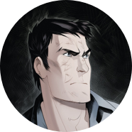
Игорь Гром
Протагонист. Питерский следователь, борец за добро и справедливость. Проблемы предпочитает решать кулаками, хотя в уме ему тоже не откажешь. После кроссовера, повредившись психикой, уволился со службы, но продолжает вершить добро.

Дима Дубин
Лучший друг и бывший напарник Игоря Грома. Романтик, верящий в силу закона и торжество справедливости. Имеет обыкновение попадать в разного рода неприятности. Во «Втором дыхании» изрядно возмужал.
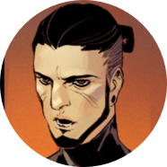
Калигари
Знаток и участник, кажется, всех субкультур Питера, какие только бывают. Для многих неофитов самых разных «движух» он является старшим товарищем, и поэтому чувствует личную ответственность за каждого из них. Помогает Игорю Грому.
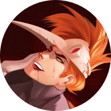
Сергей Разумовский
Антагонист, главный противник Игоря Грома. Молодой миллионер, создатель социальной сети «ВМесте». Психопат и маньяк. Имеет альтер-эго по имени Птица. Был аватаром Кутха.

Юля Пчелкина
Журналистка, возлюбленная Игоря Грома. Яркая, жизнерадостная девушка с боевым настроем и неизмеримыми достоинствами. Беспокоится за Игоря и старается всеми силами ему помогать. Погибла в арке «Игра».

Уля
Бариста в кафе «Rайдо». Знаток человеческих душ. Умеет гадать по кофейной гуще и видит многое, просто глядя людям в глаза. Оптимистична, умна и обычно знает куда больше, чем говорит. Помогает Игорю Грому.
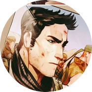
Олег Волков
Друг детства Сергея Разумовского, наёмник, бывший спецназовец. Имеет свои вопросы к планам Сергея, но с точностью следует приказам и мирится с любым его решением. Был смертельно ранен в арке «Игра», но каким-то образом выжил.

Кирк О'Райли
Сержант Гарды, один из боссов преступной организации «Дети Святого Патрика». Отличная физическая подготовка, умен, инициативен. Особые приметы: белые волосы и гетерохромия. Предан Мердоку МакАлистеру.

Мёрдок МакАлистер
Бывший член ИРА, бывший наемник, глава преступной организации «Дети Святого Патрика», владеет недвижимостью по всему миру, коллекцией картин и Котом. Любит племянника Кристофера. Жесткий лидер, достаточно спокойный и хладнокровный человек. Работал на Августа Ван дер Хольта, его стараниями после «ВВ» попал в тюрьму.
Из первоклассных воровок — в борцы с зомби-нацистами? С Международным Агентством Контроля — легко! Только, когда МАК больше нет, прежние друзья заражены опасным вирусом, а Красная Фурия не может даже самостоятельно передвигаться, приходится вопреки принципам вступить в союз со старыми врагами.


Джина Стивенс
Член Братства Воров, в котором обучалась и воспитывалась Ника, пока не сбежала, инсценировав собственную смерть. Узнав, что Чайкина жива, Джина не выдала подругу и продолжала следить за ее делами, втайне защищая от мести Братства.
Джошуа Донато
Был наемником, прошедшим много горячих точек, но сохранившим при этом честь, совесть и харизму. Мастер ближнего боя с использованием холодного оружия, но с винтовкой обращается не менее умело. Под влиянием пера Кутха превратился в подобие инопланетной плесени с памятью и сознанием Джоша.

Лотта Лемке
Тяжёлая артиллерия группы. Когда-то спасла Садап. К сожалению, под влиянием бога-ворона периодически переходит в режим берсерка, рискуя навредить и своим, и чужим, но рядом с Садап временно успокаивается.

Август ван дер Хольт
Миллиардер и владелец крупнейшей оружейной компании, обладающей едва ли не мировой монополией на самые современные технологии. Эгоистичен и властолюбив. Ищет людей, мутировавших в результате воздействия Кутха, чтобы использовать их потенциал.
Джонни Симонс
Хакер, с самого начала помогавший Нике и поддержавший ее решение вступить в МАК. Неожиданно для всех, Джонни оказался племянником погибшего агента Гамма, курировавшего операции Красной Фурии. В настоящее время помогает команде, не скрываясь по ту сторону гаджетов.
Джесси Родригез
Безбашенная наемница, получающая искреннее наслаждение от вида крови, перестрелок и жестокости. Нимфоманка. После того как Джесси избила сестру Хольта, чтобы подставить Нику, вынуждена скрываться от прежнего работодателя и примкнуть к старым врагам.

Садап Рахмани
Садап присоединилась к агентству после того, как была спасена Лоттой во время одной из операций. Она является единственным человеком, способным утихомирить Лотту во время припадков, а потому незаменима для союзников.

Артур Хаксли
Первоклассный снайпер и настоящий джентльмен. Он остаётся вежлив и собран даже в самых сложных ситуациях. Верен своему долгу и способен убить взбесившегося сокомандника, чтобы спасти остальных. Некоторое время притворялся поехавшим, со стороны оценивая варианты развития событий.
Ника Чайкина
Она же Красная Фурия. Профессиональная воровка с чистым сердцем, волей судьбы ставшая сотрудницей МАК. Новообретенная команда стала для Ники семьёй, которой у девушки никогда не было, и она готова сражаться на их стороне, даже лишившись ног в схватке с Августом ван дер Хольтом.
Решили заложить старинный фамильный крест и купить машину? Не тут-то было! Такая последовательность событий может привести к настоящей битве с тевтонцами, заговорам и козням, гибели и чудесному воскрешению любимой девушки, а также к попаданию в совершенно непонятные и далеко не всегда спокойные миры, где уже давно напрашиваются на порку зазнавшиеся боги.


Андрей Радов
Тусовщик, заложивший крест деда ради покупки автомобиля. Чтобы вернуть семейную реликвию-артефакт, путешествовал во времени и поучаствовал в многочисленных войнах. Стал Иноком — защитником русской земли, однако в кроссовере утратил свои силы и былой статус. Ныне защищает все Многомирье.

Ксюша Радова
Мироходец, дриада, жена Андрея Радова. Была убита им самим, превратившимся в демона, после чего воскрешена как дриада. В ней сохранились силы ведьм Котлована, которые Ксюша умело применяет в сражениях и повседневной жизни.
Серый Волк
Мироходец, оборотень, коллекционер артефактов. Был убит Кощеем, когда пришёл к нему за Василисой без оружия, но та, тронутая этим поступком, воскресила его. Позже озлобился, обзавёлся шубой оборотня и начал звать себя Волком. Пытается спасти Василису из плена Кощея.

Кощей
«Любящий муж, радушный хозяин, спаситель миров, и твоя смерть, если захочешь». Самый могучий воин Многомирья, оберегающий нашу Землю от покушений богов. Альтернативная версия Ивана с уничтоженной Земли. Любит Василису.
Василиса Премудрая
Главная причина, по которой Иван-царевич иной раз кажется скорее Иваном-дураком. Была создана Мокошью с целью влюбить в себя Ивана и убить его, но влюбилась в него сама и не смогла убить. Могущественная волшебница, объединившая Андрея, Ксюшу и Волка в отряд Мироходцев.
Диана де Маридор
Жрица смерти, служащая Танатосу. Сильная колдунья, была превращена Марсом в Медузу, взглядом обращавшую людей в камень. Была спасена Ксюшей.

Луна
Дочь Короля-Волка, шкуру которого стянул Иван. Была подброшена им к Королю-Волку в младенчестве, с целью смягчить его и сыграть на этой слабости. Когда её мир поработил колдун Марабель, Луна отправилась на поиски силы своего отца.
Яра
Сила, способная убивать богов. Заточена в рапире, принадлежавшей вначале Кощею, затем Андрею Радову. Не знает пощады, жестока и кровожадна.
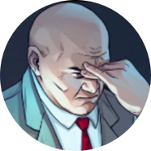
Магистр
Могущественный чернокнижник, изначально из линейки «Инок». Тайно сотрудничает с Семиазой. Принял активное участие в возвращении Кутха. Охотится за волшебными камнями.
Пока не наступил...

...полный кроссовер